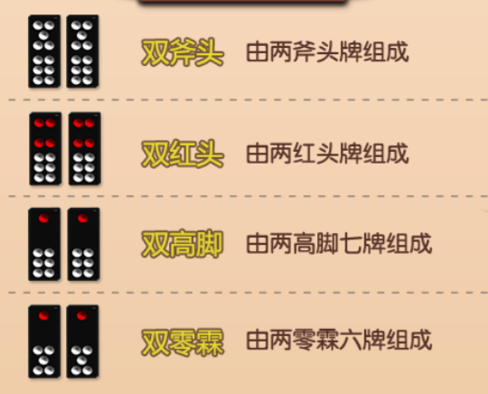

21点玩法介绍
一、玩法介绍
游戏使用8副牌，不包含大小王。系统为庄家，玩家为闲家。玩家的目标是使手中的点数之和不超过21点且比庄家大。
下注：游戏开始后，玩家可根据自己意愿选择不同的下注金额。如果超时不进行下注，系统自动执行下最小注操作。
下注其他座位：如果某张座位没有玩家，那么玩家在下注完自己的下注点后，可以在其他没有玩家的座位进行下注。可以理解为一个人同时玩多个座位。
发牌：所有玩家下注完成后，系统向每位玩家发两张牌面向上的明牌。再给庄家发两张手牌，第一张牌是明牌，第二张牌时暗牌。
买保险：所有玩家发牌完成后。如果此时庄家的明牌是A，闲家可以选择是否购买保险。购买保险需要花费原下注金额一半的费用。当所有玩家做出决定且至少有一名玩家购买了保险，庄家可查看他牌面朝下的那张牌。
如果庄家牌型是黑杰克，购买保险的玩家获得保险1：2的赔率，并且结算本局。如果庄家牌型不是黑杰克，则所有保险归庄家所有，游戏继续。
开始游戏：以上操作完成后，从座位号最小的玩家开始依次进行操作。
二、开始游戏
点数计算：扑克牌2到10的点数为其牌面数字。J、Q、K的点数为10点。A可视为1点或11点，这取决于手牌点数是否超过21点，当玩家停牌时，点数一律视为最大且尽量不爆。
双倍下注：只有两张手牌时，玩家可以将下注金额翻倍，并且再拿一张牌，然后强制停牌。
分牌：当两张手牌点数相同时，玩家可以将下注金额翻倍，将手牌一分为二，每份牌再拿一张牌。新组成的两幅手牌视为单独的牌，可分别执行双倍下注操作。
要牌：再要一张牌。只要玩家点数不超过21点，且数量不超过5张，即可重复此操作。
停牌：不再要牌，保持现有手牌不变。
庄家要牌：所有玩家回合结束后，进入庄家回合。庄家点数小于17点必须要牌，大于等于17点或五小龙必须停牌。
比牌：闲家只与庄家进行点数比较。
黑杰克：有且仅有两张手牌，且分别为A和1张10点牌，这种21点牌称为黑杰克，本轮中不需要再进行操作。如果庄家牌不是黑杰克那么庄家赔率为2：3。
注：分牌后的21点仅当做普通21点，不算作黑杰克。
五小龙：手牌达到5张且没有爆牌，称为五小龙。如果庄家牌型小于您的五小龙，庄家赔率为2：3。
续押：点击续押则直接押上次下注数额的筹码，如果不够则不能续押。
抽水：赢家所赢金额的5%
三、牌型大小比较:
黑杰克＞五小龙＞普通21点＞其他点数
如果庄闲牌型或点数相同视为平局，退还下注金额。
如果庄闲都爆牌，则庄家赢。
押庄龙虎玩法介绍
玩法：
1.本游戏采用 8副牌（不含大小鬼）合计 416张。
2.牌面的大小先比点数，K为最大牌，A为最小，其中从 2到 10牌面就为对应点数，并且10< J< Q< K。相同点数比花色，黑>红>梅>方。点数和花色均相同即为“和”。
3.每靴牌随机使用416张之中的一部分。
4.下注中状态时点击下注区域即可下注，每靴牌30局后不可下注花色。
咪牌规则：
1.押注龙、虎下注点的玩家均可以参与咪牌，只押注和的玩家不可以咪牌。
2.同时押注龙虎下注点时，只能咪押注金额多的一方。如果龙虎押注金额相同，只能咪龙牌。
3.咪牌期先咪龙牌，后咪虎牌。
4.所有玩家咪牌完成则进入下一阶段。超时未咪牌，系统自动翻牌。
赔率:
| 投注点 | 赔付倍数 | 获胜条件 |
|---|
| 龙 | 2 | “龙”下注点的牌大于“虎”下注点的牌 |
| 虎 | 2 | “虎”下注点的牌大于“龙”下注点的牌 |
| 和 | 20 | “龙”、“虎”下注点的牌点数和花色均相同 |
限红：
| 房间类型 | 龙 | 虎 | 和 |
|---|
| 体验房 | 2~100 | 2~100 | 2~100 |
| 初级房 | 10~500 | 10~500 | 10~500 |
| 中级房 | 50~2500 | 50~2500 | 50~500 |
| 高级房 | 200~10000 | 200~10000 | 200~500 |
注：限红指此下注点单局单个玩家下注金额之和的范围。
赔付：
1.按照赔率进行赔付，不抽水。
2.玩家同时下注“龙，虎”时，此局此玩家这2个下注点不计算有效投注。
3.开“和”时：龙虎下注点通杀且计有效投注。
4.其他情况有效下注金额等于实际下注金额。
炸金花玩法介绍
牌型
大小：豹子>同花顺>金花>顺子>对子>散牌；特殊>AAA。
豹子：三张点相同的牌（AAA最大，222最小）。
同花顺：花色相同的顺子（AKQ最大，A23最小）。
金花：花色相同，非顺子（AKJ最大，352最小）。
顺子：花色不同的顺子（AKQ最大，32A最小）。
对子：两张点相同的牌（AAK最大，223最小）。
高牌：三张牌不组成任何类型的牌（AKJ最大，352最小）。
特殊：散牌中的352。
先比牌型：相同牌型按顺序比点，点数相同则按顺序比花色。
点数：2为最小，A为最大。从大到小依次为：A、K、Q、J、10、9、8、7、6、5、4、3、2。
花色：黑桃>红桃>梅花>方片。
顺子：AKQ>KQJ……432>32A。注：KA2不是顺子。
对子牌型大小比较：先比对子点数，对子点数相同，再比单牌点数。单牌点数也相同，再比对子里面最大花色。
玩法
随机将2-5个玩家分配到同一桌，发牌前每个玩家自动投入与底注相同数量的筹码作为锅底。
每个玩家依次发3张牌，默认牌面向下，随机一家先进行操作，从他下家开始逆时针轮流操作。
第二轮开始才可以比牌，比牌也需要投注，金额与需跟注金额相同。
携带金额低于需要投注金额时进行比牌会触发孤注一掷效果，孤注一掷时投出此玩家所有筹码并从下家开始依次比牌。
所有玩家依次进行了操作叫做一轮，每局最多20轮，达到轮数上限后，从庄的下家开始，依次与下家强制发起比牌，此时比牌无需进行下注。
玩家看配合进行加注、比牌、跟注操作，消耗筹码是未看牌的2倍。
比牌输掉或者弃牌的玩家会被淘汰，每局只能有一个获胜玩家。
赔率
系统会从玩家赢得的筹码中抽水5%。
拿到豹子的玩家，本局无论输赢都会获得一份由系统赠送的喜钱，喜钱不会被抽水。
非“孤注一掷”的情况下获胜，可以赢得桌面所有筹码。
当触发“孤注一掷”时自动从下家开始与所剩玩家轮流比牌，此情况下获胜，返还其他玩家多余的投注筹码并赢得桌面剩余筹码。
其他玩家多余的投注筹码=剩余玩家本轮投注筹码*（玩家自己应该投注筹码-玩家自己实际投注筹码）/玩家自己应该投注筹码。
如玩家比牌时应该投注10，但自己投了5，他进行孤注一掷获胜，某剩余玩家本轮投注了20，则需要给此剩余玩家返还20*（10-5）/10=10。
百家乐玩法介绍
玩法：
1.本游戏采用8副牌（不含大小鬼，每副牌52张）合计416张。
2.庄闲各先派两张牌，“闲家”先发，如第一轮未分出胜负再按“牌例”进行补牌。
3.每方最多再发1张牌（补牌），谁最接近9点即为胜方，而相同点数字即和局。
咪牌规则：
1.押注庄、闲下注点的玩家均可以参与咪牌，只押注和、庄对、闲对的玩家不可以咪牌。
2.同时押注庄闲下注点时，只能咪押注金额多的一方。如果庄闲押注金额相同，只能咪庄家牌。
3.咪牌期与补牌期均为闲家先咪牌，庄家后咪牌。
所有玩家咪牌完成则进入下一阶段。超时未咪牌，系统自动翻牌。
补牌规则：
闲家：
| 起手牌点数总和 | 补牌规则 |
|---|
| 0 | 须补牌 |
| 1 | 须补牌 |
| 2 | 须补牌 |
| 3 | 须补牌 |
| 4 | 须补牌 |
| 5 | 须补牌 |
| 6 | 不须补牌 |
| 7 | 不须补牌 |
| 8 | “天生赢家” |
| 9 | “天生赢家” |
（先判断闲家是否需要补牌）
庄家：
| 起手牌点数总和 | 补牌规则 |
|---|
| 0 | 须补牌 |
| 1 | 须补牌 |
| 2 | 须补牌 |
| 3 | 当闲家补得第三张牌是8，不须补牌；其余则须补牌 |
| 4 | 当闲家补得第三张牌是0.1.8.9，不须补牌；其余则须补牌 |
| 5 | 当闲家补得第三张牌是0.1.2.3.8.9，不须补牌；其余则须补牌 |
| 6 | 当闲家补得第三张牌是0.1.2.3.4.5.8.9，不须补牌；其余则须补牌 |
| 7 | 不须补牌 |
| 8 | “天生赢家” |
| 9 | “天生赢家” |
（闲家起手牌点数为6点或7点，闲家不须补牌，此条件下庄家起手牌点数为5或5点以下，庄家必须补第三张牌）
赔付：
| 投注点 | 赔付倍数 | 获胜条件 |
|---|
| 庄 | 1赔1.95 | “庄”下注点的牌面点数大于“闲”下注点 |
| 闲 | 1赔2 | “闲”下注点的牌面点数大于“庄”下注点 |
| 和 | 1赔9 | “庄”、“闲”下注点的牌面点数相同 |
| 庄对 | 1赔12 | 指庄的起手2张牌相同 |
| 闲对 | 1赔12 | 指闲的起手2张牌相同 |
和局时，“庄、闲”的下注将退回，且不计有效投注。“庄、闲“下注金额相同时，不计有效投注，其他情况有效下注金额等于实际下注金额。
本游戏不抽水。
限红：
不同房间不同下注点，每局下注范围不同，如下图：
| 房间类型 | 体验房 | 初级房 | 中级房 | 高级房 |
|---|
| 庄 | 4-250 | 40-2500 | 200-10000 | 500-30000 |
| 闲 | 4-250 | 40-2500 | 200-10000 | 500-30000 |
| 和 | 4-250 | 40-1500 | 200-3000 | 500-5000 |
| 庄对 | 4-250 | 40-1000 | 200-2500 | 500-3500 |
| 闲对 | 4-250 | 40-1000 | 200-2500 | 500-3500 |
百人牛牛玩法介绍
百人牛牛玩法：
游戏用牌为一副牌除大小王以外，共计52张。
闲家所有下注点只和庄家互比，闲家之间不互比。
本游戏一共4个下注点，天、地、玄、黄，均可在下注状态时进行下注。
牌型：
牌面：10、J、Q、K的点数都算作10，其他牌按牌面数字计算。
没牛：5张牌中任意3张牌的点数之和都不为10的整数倍。
有牛：5张牌中有3张牌点数之和为10的整倍数，另外2张牌的牌面之和不为10的整倍数，则这2张点数之和的个位数即为牛几。
牛牛：5张牌中有3张牌的点数之和为10的整倍数，且另外2张牌的点数相加也为10的整倍数。
四花：5张牌中有4张牌为花牌(J、Q、K)中的任意牌，且第5张牌为10。
五花：5张牌为花牌(J、Q、K)中的任意牌。
四炸：5张牌中有4张牌的点数相同，第五张随意。
五小牛：5张牌的点数都小于5，且点数之和小于等于10。
牌型比较:
牌型大小比较：五小牛>四炸>五花牛>四花牛>牛牛>牛九>牛八>牛七>牛六>牛五>牛四>牛三>牛二>牛一>没牛
炸弹之间比较大小：比较四炸的大小，决定胜负。
其他同牌型之间大小：比最大牌的点数（K>Q>J>10>9>8>7>6>5>4>3>2>A）；最大牌的点数相同，比较最大牌花色（黑桃>红桃>梅花>方块）。
赔率：
没牛——牛六--------- 1倍
牛七——牛九--------- 2倍
牛牛——五小牛------- 3倍
限红：
| 房间类型 | 天 | 地 | 玄 | 黄 |
|---|
| 体验房 | 2-200 | 2-200 | 2-200 | 2-200 |
| 初级房 | 10-1000 | 10-1000 | 10-1000 | 10-1000 |
| 中级房 | 50-5000 | 50-5000 | 50-5000 | 50-5000 |
| 高级房 | 200-20000 | 200-20000 | 200-20000 | 200-20000 |
注：单个下注点下注金额之和的范围
赔付：抽水为5%，按照单个下注区域单独抽水。
下注后在没结算前无法退出游戏，请耐心等待本局游戏结束。
注：当下注游戏币超过身上携带游戏币的1/3时，将无法下注。
德州扑克玩法介绍
基本玩法
游戏操作
牌型说明
功能键说明
大/小盲注：为了使得游戏能够进行，强制庄家顺时针方向的下一个人下一注小盲注，第二个人下一注大盲注（大盲注是小盲注的2倍）。
让牌：不确定牌力是否处于优势时，可以选择让牌，让牌不会下注。
弃牌：牌力较低时，最好选择弃牌，弃牌后退出本轮牌局。
ALL In：如果对自己的牌力非常有信心，可以选择ALL In。
跟注：如果觉得自己的牌力还不错，可以跟注。
加注：如果对自己的牌力比较有信心，可以加注。
自动让牌：下一轮自动让牌。
让/弃牌：能让则让，不能让则自动弃牌。
跟任何注：无论别人下注多少，下一轮自动跟注多少。
比牌：手牌公共牌取五张组成最大牌型进行比牌，牌型大小相同且平分奖池金额，顺子比最大牌型（注：A2345小于23456），散牌比最大牌型点数。
有效投注：min(自己本局累计下注，max（除自己以外其他每个玩家本局累计下注）)。
比如，您本局累计下注100，玩家A和玩家B本局累计下注分别是150和300，那么您本局有效投注=min（100，max（150，300））=min（100，300）=100。
牌型大小与池子金额分配：从本局下注筹码最少的人开始分主池，然后按顺序分边池，然后比较牌的大小。
从牌最大的拿走他参与过比牌的底池，然后是牌第二大的拿走他参与过比牌的底池，以此类推。
比如，A1000筹码，B2000筹码，C3000筹码，三个人都ALLin了，最后牌力A>B>C，那么主池3000归A，边池1的2000归B，边池2的1000归C。
还是这个例子，A=C>B，主池3000，A与C平分，边池2000归C，B输光。
抽水：抽取赢家所赢取的5%。
关于我们
各位玩家您好：
开元棋牌自上线以来，得到广大玩家的厚爱和支持，我们向您表示衷心的感谢。在此期间也出现很多冒用开元品牌的现象发生。
在此我们严重申明：KG和KY品牌皆为开元棋牌所有，也是唯一正版品牌。请广大玩家认准商标，切勿上当受骗。
斗地主玩法介绍
玩法：游戏由三个人玩一副牌，地主是一方，其余两家为另一方，双方对战，先出完的一方胜。
发牌：一副牌54张，每人17张，留3张做底牌，在确定地主之前玩家不能看底牌。
叫牌：系统随机选择一个人开始叫牌，按逆时针顺序轮流进行。叫牌时可以选择1分，2分3分和不叫，叫分持续到一个人叫3分或者另外两个人都不叫分为止。
如果都“不叫”，则重新发牌，重新叫牌，叫牌结束后，地主玩家获得三张底牌。
出牌：由地主先出牌，然后按逆时针顺序依次出牌，轮到玩家跟牌时，玩家可选择不出或按规则出牌。直至某一方牌出完就结束此局。
牌型：
王炸：即双王（双鬼牌），什么牌型都可以打，是最大的牌。
炸弹：四张同点牌。如四个5.除王炸和比自己大的炸弹外，其他什么牌型都可以打。
单个牌：单张牌。比如3。
对子牌：两个点数相同的牌。
三张牌：三张点数相同的牌。
三带一：三张相同的牌+一张单牌。例如：三张3+单4。
三带二：三张相同的牌+一对牌。 例如：三张3+对4。
单顺子：五张或更多连续的牌。 例如:单3+单4+单5+单6+单7。不包括2点和双王。
双顺子：三对或更多连续的牌。 例如:对3+对4+对5。不包括2点和双王。
三顺子：两个或更多连续的三张牌。例如：三张3+三张4+三张5。不包括2点和双王。也叫飞机不带翅膀。
飞机带翅膀：三顺+同数量的单牌或对牌（或同数量的对牌）。
四带二：四张牌+任意两张单排或两对牌（或任意两对牌）例如:四张5+单3+单8或四张4+对5+对7。
牌型大小：
A：王炸最大，可以打任意其他的牌。
B：炸弹比王炸小，比其他牌大。都是炸弹时按牌的分值比大小。
C：除王炸与炸弹外，其他牌型必须要牌型相同并且总张数相同才能比大小
D：单牌按分值比大小，依次是：大王＞小王＞2＞A＞K＞Q＞J＞10＞9＞8＞7＞6＞5＞4＞3，不分花色。
E：对牌，三张牌都按照分值比大小。
F：顺牌，顺牌按最大的一张牌的分值比大小。
F：飞机带翅膀和四带二按其中的三顺和四张部分来比，带的牌不影响大小。
游戏倍数
炸弹：每出一个炸弹，倍数×2。
王炸：倍数×2。
春天：农民一张牌没出，地主就赢了，出现这种情况时倍数×2。
反春天：地主只出了一手牌，农民就赢了，出现这种情况时倍数×2。
结算
X：底分
Y：倍数
地主胜利时所赢的金币=农民A失败所输的金币+农民B失败所输的金币-抽水
地主失败时所输的金币=农民A胜利所赢的金币+农民B胜利所赢的金币+抽水
农民A胜利时所赢的金币=X*Y-抽水
农民A失败时所输的金币=X*Y
农民B胜利时所赢的金币=X*Y-抽水
农民B失败时所输的金币=X*Y
抽水：赢家所赢金币的5%
防以小博大：详情见下方两种情况。
情况1：农民胜利
农民A所赢金币=（农民A携带、X*Y、地主携带金币/2,）中取最小值-抽水
农民B所赢金币=（农民B携带、X*Y、地主携带金币/2,）中取最小值-抽水
情况2：地主胜利
农民A所输金币=（农民A携带、X*Y、地主携带金币/2,）中取最小值
农民B所输金币=（农民B携带、X*Y、地主携带金币/2,）中取最小值
地主所赢金币=农民A所输金币+农民B所输金币-抽水
倍数限制
为避免产生过大的输赢倍数，炸弹和王炸产生的倍数不得超过牌桌最大倍数限制。比如某房间最大倍数是8倍，农民A连出三个炸弹，此时倍数达到8倍，此时B再出炸弹或者王炸都不再计算倍数。
退出游戏
1.继续游戏按钮没出来前，严禁玩家退出。
2.玩家强制退出游戏，不会退还已下注金额，并且按正常流程进行收益结算。
二八杠玩法介绍
用牌：利用中国麻将中，单一色筒子牌(一筒到九筒，每一种花色4张牌， 一共36张牌)，外加白皮4张牌，共有40张牌。发完所有牌为一轮，共五轮。
玩家：通过抢庄，将同桌四个玩家分为庄家( 1方)跟闲家( 3方)，总共四方。
发牌：根据掷出2个骰子之和决定发牌顺序。1是庄家，2是庄家的下家，逆时针以此类推。
派彩：根据大小判断输赢，庄家依次跟3个闲家比较大小，独立赔付。牌型完全一样时，庄赢。
抢庄：抢庄时，玩家可以通过选择抢庄倍数进行抢庄，最高200倍。选择抢庄倍数越高的玩家成为庄家的概率越大。抢庄倍数是指抢庄玩家本局能承受的最大赔付金额是底注的多少倍。
下注：下注时，玩家可以通过选择下注倍数进行下注。下注倍数是指玩家本局实际下注金额是底注的多少倍。
玩法：二八杠游戏默认五局且中途无法退出。
大小
详细大小比较请看图示。
赔率玩家赢钱由庄家赔付，庄家赢钱则收取玩家下注金额，赔率1:1。
无论庄家与玩家，赢钱时都需要被系统抽水5%
极速炸金花玩法介绍
进入游戏后，系统自动开始对局并会自动匹配下局。
断开连接后会在本轮（共5局）结束退出游戏，点击停止游戏则在本局结束后停止。
每局自动扣除底注等额筹码，然后直接开牌比较大小。
每局牌最大玩家可以获得对局奖励。
对局奖励金额=底注*总赔付倍数。
总赔付倍数=A玩家牌型对应倍数+B玩家牌型对应倍数+…+N玩家牌型对应倍数。
不同牌型对应赔付倍数如下表（配表）：
| 牌型种类 | 倍数 |
|---|
| 幸运奖 | 10 |
| 豹子 | 5 |
| 同花顺 | 4 |
| 金花 | 2 |
| 顺子 | 1 |
| 对子 | 1 |
| 散牌 | 1 |
无论牌大小，每局都有一定概率获得幸运奖励，幸运奖励=底注*随机倍数。
无论赢得对局奖励还是幸运奖励都不用被抽水。
结算示例：
某局，底注10，同桌3玩家，A牌型豹子，B牌型散牌，C牌型金花；则此局A获胜，A获得的对局奖励=10*（5+1+2），B随机到幸运奖，获得幸运奖励。
牌型：
豹子：三张点相同的牌（AAA最大，222最小）。
同花顺：花色相同的顺子（AKQ最大，A23最小），手牌按照从小到大顺序展示。
金花：花色相同，非顺子（AKJ最大，352最小），手牌按照从小到大顺序展示。
顺子：花色不同的顺子（AKQ最大，32A最小），手牌按照从小到大顺序展示。
对子：两张点相同的牌（AAK最大，223最小），手牌按照对子-单排的顺序展示。
散牌：三张牌不组成任何类型的牌（AKJ最大，352最小），手牌按照从小到大顺序展示。
特殊：极速炸金花中，没有特殊牌型。
大小比较规则：
先比牌型，相同牌型按顺序比点，点数相同则按顺序比花色。
点数：牌点中，2为最小，A为最大。从大到小依次为：A、K、Q、J、10、9、8、7、6、5、4、3、2。
花色：黑桃>红桃>梅花>方片。
牌型：豹子>同花顺>金花>顺子>对子>散牌。
顺子AKQ>KQJ……432>32A。注：KA2不是顺子。
对子的情况无论比点数还是花色，都是先比对子再比单牌。
抢庄牛牛玩法介绍
定庄：开局玩家开始抢庄。抢庄倍数最高的玩家为本局庄家，抢庄倍数相同时携带游戏币越多坐庄概率越大。超时不抢庄，系统自动执行不抢操作。所有人都不抢庄，随机一名玩家坐庄。
闲家：定庄后，所有闲家开始选择下注倍数。携带游戏币越多，最大可下注倍数越大，超时不下注，系统自动下最小倍数。
开始发牌：系统向每名玩家发五张手牌。
拼牌：玩家拿到五张手牌后即开始拼牌。
比牌：拼牌完成后，所有玩家亮出手牌。闲家只与庄家互比，闲家与闲家之间不互比。
结算公式：
A：房间底注
M：庄家牌型对应的倍数
N：闲家牌型对应的倍数
X：庄家抢庄倍数
Y：闲家下注倍数
庄家胜利所赢游戏币=A*M*X*Y-抽水
庄家失败所输游戏币=A*N*X*Y
闲家胜利所赢游戏币= A*N*X*Y-抽水
闲家失败所赢游戏币= A*M*X*Y
防以小博大机制：本局带入多少游戏币，本局最多输赢多少游戏币。
比如您本局带入80，计算时你理论应得200。但假如您本局输了最多只输80，为了公平起见，您本局最多也只能赢80，而不是200。
抽水：赢家所赢金额的5%
特殊情况：如果出现庄家不够输的情况，按照各闲家理论盈利比例结算输赢。比如庄家有100，一次性输完。A理论应该赢200，B理论应该赢200，C理论应该赢400。
由于庄家钱不够输。按照ABC理论盈利占比，最终得出：
A实际盈利=200/（200+200+400）*100=25
B实际盈利=200/（200+200+400）*100=25
C实际盈利=400/（200+200+400）*100=50
牌型算法
牌面：10、J、Q、K的点数都算作10，其他牌按牌面数字计算。
没牛：5张牌中任意3张牌的点数之和都不为10的整数倍。
有牛：5张牌中有3张牌点数之和为10的整数倍，另外2张牌的牌面值之和不为10的整数倍，则这2张点数之和的个位数即为牛几。
牛牛：5张牌中有3张牌的点数之和为10的整数倍，且另外2张牌的点数相加也为10的整数倍。
四花：5张牌中有4张牌为花牌（J、Q、K）中的任意牌，且第5张牌为10。
五花：5张牌为花牌（J、Q、K）中的任意牌。
四炸：5张牌中有4张牌相同，第5张随意。
五小牛：5张牌的点数都小于5，且点数之和小于等于10。
牌型大小
牌型大小比较：五小牛>四炸>五花牛>四花牛>牛牛>牛九>牛八>牛七>牛六>牛五>牛四>牛三>牛二>牛一>没牛。
四炸之间大小比较：比较四炸的大小。
其它同牌型之间大小：比最大牌的点数（K>Q>J>10>9>8>7>6>5>4>3>2>A）；最大牌的点数相同，比较最大牌花色（黑桃>红桃>梅花>方块）。
牌型倍数
五小牛------------ 4倍
四炸-------------- 4倍
五花牛------------ 4倍
四花牛------------ 4倍
牛牛-------------- 3倍
牛七—牛九------- 2倍
没牛—牛六------- 1倍
无牛-------------- 1倍
抢庄牌九玩法介绍
简介：游戏共有32张牌，每轮游戏分为2局，必须玩满两局才可以退出或者重新匹配下一局。第一局从32张牌中随机抽取8张发给玩家（每人2张），第二局从余下的24张牌中随机抽取8张发给玩家。
定庄：开局后玩家开始抢庄。抢庄倍数最高的玩家为本局庄家，抢庄倍数相同时携带有效币越多坐庄概率越大。所有玩家都不抢庄，随机一名玩家坐庄。
下注：定庄后，所有闲家开始选择下注倍数。携带游戏币越多，最大可下注倍数越大。超时不下注，默认执行下最小倍数操作。
发牌：所有玩家下注完成后，系统向每名玩家发2张牌，所有玩家下注完成后，系统投掷两颗骰子，根据骰子点数之和决定发牌顺序。1点是庄家，2点是庄家的下家，顺时针以此类推。
决定出向谁先发牌后，然后系统按逆时针向每位玩家发两张牌。
亮牌：发牌完成后从庄家下家开始，系统按顺时针自动执行亮牌操作。
比牌：根据亮牌结果进行比牌，闲家只与庄家比牌，闲家与闲家之间不比牌。
结算公式：
A：房间底注
X：庄家抢庄倍数
Y：闲家下注倍数
庄家胜利所赢游戏币=A*X*Y-抽水
庄家失败所输游戏币=A*X*Y
闲家胜利所赢游戏币= A*X*Y-抽水
闲家失败所输游戏币= A*X*Y
防以小博大机制：本局带入多少游戏币，本局最多输赢多少游戏币。比如您本局带入80，计算时你理论应得200。但假如您本局输了最多只输80。
为了公平起见，所以您本局最多也只能赢80，而不是200。
抽水：赢家所赢金额的5%
特殊情况：如果出现庄家不够输的情况，按照各闲家理论盈利比例结算输赢。
比如庄家有100，一次性输完，A理论应该赢200，B理论应该赢200，C理论应该赢400。由于庄家钱不够输，按照ABC理论盈利占比，最终得出：
A实际盈利=200/（200+200+400）*100=25
B实际盈利=200/（200+200+400）*100=25
C实际盈利=400/（200+200+400）*100=50
牌型比较：
比牌原则：对牌>点数牌。
首先看有无配成对牌，如果配对牌且牌型相同，那么视为和局。如果没有配成对牌，那么以两牌点数之和取个位数来进行比牌（比如8点+7点=15点=5点）。如果点数相同则比较单牌最大牌的大小。
如果单牌最大牌的大小也相同，那么比单牌最小牌的大小。如果还是相同，那么视为和局。
对牌大小排序、单牌大小排序请见其他帮助。
对牌大小：
对牌说明：

单牌大小：
三公玩法介绍
开始发牌：游戏开始后，系统向每位玩家发三张手牌，牌值不可见。
定庄：所有玩家开始抢庄，点过抢庄的玩家均有机会坐庄。如果有多个玩家抢庄，那么携带游戏币越多的玩家坐庄的机会越大。如果所有人都不抢庄，那么随机选择一名玩家坐庄。
开始下注：定庄后，所有闲家开始选择下注金额。庄家和闲家携带游戏币越多，最大可下注金额越大。
开牌：所有玩家下注完成后，玩家可以点击亮牌按钮亮出自己的手牌。
比牌：所有玩家摊牌后，庄家和闲家进行比牌，闲家与闲家之间不进行比牌。
结算公式：
A：房间底注
M：庄家牌型对应的倍数
N：闲家牌型对应的倍数
Y：闲家下注倍数
庄家胜利所赢游戏币=A*M*Y-抽水
庄家失败所输游戏币=A*N*Y
闲家胜利所赢游戏币= A*N*Y-抽水
闲家失败所赢游戏币= A*M*Y
防以小博大机制：本局带入多少游戏币，本局最多输赢多少游戏币。
比如您本局带入80，计算时你理论应得200。因为假如您本局输了最多只输80，所以为了公平起见，您本局最多也只能赢80，而不是200。
特殊情况：如果出现庄家不够输的情况，按照各闲家理论盈利比例结算输赢。比如庄家有100，一次性输完。A理论应该赢200，B理论应该赢200，C理论应该赢400。
由于庄家钱不够输。按照ABC理论盈利占比，最终得出：
A实际盈利=200/（200+200+400）*100=25
B实际盈利=200/（200+200+400）*100=25
C实际盈利=400/（200+200+400）*100=50
抽水：赢家所赢金额的5%
牌型算法
牌面： J、Q、K的点数都算作0，也称为公仔牌。
爆玖：由任意三张3构成的牌型，比如333。
炸弹：由点数相同的三张牌组成的牌型，比如QQQ，222。
三公：由任意三张不相同的公仔牌构成的牌型，比如KKQ，KQJ。
点数牌：任意三张牌点数相加取个数位，比如KQ9=9点，553=3点，235=0点。
牌型大小
牌型点数大小：K>Q>J 10>9>8>7>6>5>4>->2>A
花色大小：黑桃>红桃>梅花>方片
基本牌型大小比较：爆玖>炸弹>三公>9点>8点>7点>6点>5点>4点>3点>2点>1点>0点。
炸弹大小比较：KKK>QQQ>JJJ>101010>999>888>777>666>555>444>222>AAA
基本牌型大小比较：如果多家牌型都是三公，则先比较玩家最大的那张公仔牌的大小（如KQJ>QQJ）。如果还是相同，则比较玩家最大公仔牌的花色（如：♠K♦Q♥J>♥K♦Q♥J）。
点数牌大小比较：如果多个玩家都是点数相同点数牌，那么先比较玩家的公仔牌数量，谁的公仔牌数多谁大（如 J Q 9>J 10 9）。
如果公仔牌数量还是一致则比较最大的那张单牌的大小（如K Q 9>J Q 9）。如果大小还相同则比较最大牌的花色，（如：♠K♦Q♥9>♥K♦Q♥9）。
牌型倍数
爆玖-------- 5倍
炸弹-------- 4倍
三公-------- 3倍
九点-------- 2倍
八点-------- 2倍
七点-------- 2倍
六点-------- 1倍
五点-------- 1倍
四点-------- 1倍
三点-------- 1倍
二点-------- 1倍
一点-------- 1倍
零点-------- 1倍
森林舞会玩法介绍
基本玩法
玩法：游戏每局有30秒的押注时间，在押注时间内玩家可押任意的下注点，当押注时间结束后进行开盘，每局转盘轮数不定，最多5轮。
转盘转动停止会指到相应的动物与颜色，玩家押中对应的颜色动物时，押中的下注点分值乘以倍数算成游戏币返还给玩家。
下注点：本游戏所有下注点可以同时任意押注，下注点3种颜色和4种动物两两组合，共组成12个下注点。
动物：动物分别为兔子，猴子，熊猫，狮子。
颜色：颜色分别为绿色，黄色，红色。
结算公式：
A=本局开奖点倍数
X=玩家在该开奖点下注的游戏币数量
Y=玩家在本局总下注的游戏币数量
玩家中奖所赢的游戏币=A*X-Y
抽水：本游戏不抽水。
特殊模式：
大三元：转盘停止后，“所中动物的三种颜色”都可以中奖。（例如：指针转到了狮子，那么押注红色狮子、绿色狮子、黄色狮子均算中奖，即会出现3个开奖点）。
大四喜：转盘停止后，“所中颜色的四种动物”都可以中奖。（例如：指针转到了红色，那么押注红色狮子、红色熊猫、红色的猴子、红色兔子均算中奖，即会出现4个开奖点）。
送灯：额外赠送一个开奖点，即会出现2个开奖点。（与原开奖点不同）。
霹雳闪电：在结算中，会使开奖点的倍数翻倍。（例如:指针转到了红色的狮子，倍数为40倍，玩家押注了100游戏币，原本正常结算为4000游戏币，实际结算为8000游戏币）。
不同房间下注点最高下注额度:
| 下注点 | 体验房 | 初级房 | 中级房 | 高级房 |
|---|
| 狮子 | 150 | 250 | 500 | 1000 |
| 狮子 | 150 | 250 | 500 | 1000 |
| 狮子 | 150 | 250 | 500 | 1000 |
| 熊猫 | 300 | 500 | 1000 | 2000 |
| 熊猫 | 300 | 500 | 1000 | 2000 |
| 熊猫 | 300 | 500 | 1000 | 2000 |
| 猴子 | 600 | 1000 | 2000 | 4000 |
| 猴子 | 600 | 1000 | 2000 | 4000 |
| 猴子 | 600 | 1000 | 2000 | 4000 |
| 兔子 | 900 | 1500 | 3000 | 6000 |
| 兔子 | 900 | 1500 | 3000 | 6000 |
| 兔子 | 900 | 1500 | 3000 | 6000 |
倍数说明：游戏中有三种倍率表，表中每个下注点都对应一种倍率。每次开局会随机选择一个表，下注点的倍率会同步变成表里对应的倍率。
（例如：开局随机到倍率表一，则红色狮子在本局的倍率为46倍，其他以此类推）。
| 倍率表一 | 动物 | 倍率 | 动物 | 倍率 | 动物 | 倍率 | 动物 | 倍率 |
|---|
| 狮子 | 46 | 熊猫 | 23 | 猴子 | 13 | 兔子 | 8 |
| 狮子 | 40 | 熊猫 | 10 | 猴子 | 11 | 兔子 | 7 |
| 狮子 | 25 | 熊猫 | 12 | 猴子 | 7 | 兔子 | 4 |
| 倍率表二 | 动物 | 倍率 | 动物 | 倍率 | 动物 | 倍率 | 动物 | 倍率 |
|---|
| 狮子 | 35 | 熊猫 | 23 | 猴子 | 13 | 兔子 | 8 |
| 狮子 | 31 | 熊猫 | 10 | 猴子 | 11 | 兔子 | 7 |
| 狮子 | 40 | 熊猫 | 12 | 猴子 | 7 | 兔子 | 4 |
| 倍率表三 | 动物 | 倍率 | 动物 | 倍率 | 动物 | 倍率 | 动物 | 倍率 |
|---|
| 狮子 | 28 | 熊猫 | 14 | 猴子 | 8 | 兔子 | 5 |
| 狮子 | 35 | 熊猫 | 20 | 猴子 | 11 | 兔子 | 8 |
| 狮子 | 31 | 熊猫 | 17 | 猴子 | 10 | 兔子 | 8 |
不同房间下注点最高下注限额：
| 下注点 | 体验房 | 初级房 | 中级房 | 高级房 |
|---|
| 狮子 | 150 | 250 | 500 | 1000 |
| 狮子 | 150 | 250 | 500 | 1000 |
| 狮子 | 150 | 250 | 500 | 1000 |
| 熊猫 | 300 | 500 | 1000 | 2000 |
| 熊猫 | 300 | 500 | 1000 | 2000 |
| 熊猫 | 300 | 500 | 1000 | 2000 |
| 猴子 | 600 | 1000 | 2000 | 4000 |
| 猴子 | 600 | 1000 | 2000 | 4000 |
| 猴子 | 600 | 1000 | 2000 | 4000 |
| 兔子 | 900 | 1500 | 3000 | 6000 |
| 兔子 | 900 | 1500 | 3000 | 6000 |
| 兔子 | 900 | 1500 | 3000 | 6000 |
通比牛牛玩法介绍
下注阶段：开局后所有玩家开始选择下注倍数。
发五张牌：所有玩家下注完成后，系统向每名玩家发五张牌。
摊牌：玩家拿到五张手牌后，点击摊牌按钮即可亮出自己的手牌。
比牌：所有玩家摊牌完成后，牌型最大的玩家即为本局赢家，其他玩家为输家。输家按结算规则向赢家赔付游戏币。
结算公式：
A：房间底注
M：赢家牌型对应的倍数
X：赢家下注倍数
Y：输家下注倍数
输家所输游戏币=A*M*X*Y、输家本局身上携带游戏、赢家本局身上携带游戏币中取最小值。
比如：A*M*X*Y=100，输家本局身上携带游戏=1000，赢家本局身上携带游戏币=50，那么输家所输游戏币=50，赢家所赢游戏币= 所有输家所输游戏币相加-抽水。
抽水：赢家所赢金额的5%。
防以小博大机制：本局带入多少游戏币，本局从每个输家身上最多赢多少游戏币。比如您本局带入80，有3个输家输钱给您。计算时你理论应得300。但假如您本局输了最多只输80，为了公平起见，您本局最多也只能从每个输家身上能赢80。
所以您的实际盈利扣除抽水前是3*80=240，而不是300。
托管功能
1、点击牌桌上的托管按钮后，可以进行托管相关设置。
2、托管后系统会根据您的设置自动执行下注、摊牌、匹配操作。
3、如果您实际最大可下注倍数，小于您设置的下注倍数，那么自动执行最大可下注倍数。
4、如想取消托管功能，点击头像旁的取消托管即可。
牌型算法
牌面：10、J、Q、K的点数都算作10，其他牌按牌面数字计算。
没牛：5张牌中任意3张牌的点数之和都不为10的整数倍。
有牛：5张牌中有3张牌点数之和为10的整数倍，另外2张牌的牌面值之和不为10的整数倍，则这2张点数之和的个位数即为牛几。
牛牛：5张牌中有3张牌的点数之和为10的整数倍，且另外2张牌的点数相加也为10的整数倍。
四花牛：5张牌中有4张牌为花牌（J、Q、K）中的任意牌，且第5张牌为10。
五花牛：5张牌为花牌（J、Q、K）中的任意牌。
四炸：5张牌中有4张牌的点数相同，第5张随意。
五小牛：5张牌的点数都小于5，且点数之和小于等于10。
牌型大小
牌型大小比较：五小牛>四炸>五花牛>四花牛>牛牛>牛九>牛八>牛七>牛六>牛五>牛四>牛三>牛二>牛一>没牛。
炸弹之间大小比较：比较四炸的大小。
其它同牌型之间大小：比最大牌的点数（K>Q>J>10>9>8>7>6>5>4>3>2>A）；最大牌的点数相同，比较最大牌花色（黑桃>红桃>梅花>方块）。
牌型倍数
没牛—牛六------- 1倍
牛七—牛九------- 2倍
牛牛-------------- 3倍
四花牛------------ 4倍
五花牛------------ 4倍
四炸-------------- 4倍
五小牛------------ 4倍
十三水玩法介绍
一、玩法介绍
每局使用一副牌（不含大小王，共52张），每名玩家分配13张牌，将13张牌摆成三墩（头墩3张，中墩、尾墩各5张），头墩必须小于中墩，中墩必须小于尾墩，否则则为“倒水”。
牌型：同花顺> 铁支>葫芦>同花>顺子>三条>两对>对子>乌龙。
点数：A>K>Q>J>10>9>8>7>6>5>4>3>2。
特殊牌型：至尊青龙>一条龙>十二皇族>三同花顺>三分天下>全大>全小>凑一色>四套三条>五对三条>六对半>三顺子>三同花。
结算：先比较普通牌型，大者获胜。特殊牌直接按人头赢得对应水数。如有多位玩家拥有特殊牌型则特殊牌型的玩家做比较，大的获胜。
普通牌型摆牌完成后，按照头墩、中墩、尾墩的顺序依次与其他三位玩家比较大小。先比较牌型，牌型相同按从大到小的顺序比点。
注：顺子中的A2345仅小于10JQKA（因为A依然是点数最大的牌）。
二、牌型介绍
乌龙：一墩牌里面都是一张张单独的牌，没牌型。获胜赢1水。
对子：除了两张一样点数的牌外没有其他牌型。获胜赢1水。
两对：两个对子加上一个单张组成的牌型。获胜赢1水。
三条：除了三张一样点数的牌外没有其他牌型。获胜赢1水，摆头墩胜+2水。
顺子：点数按照顺序连续五张牌组成的牌型(特殊牌型除外)。获胜赢1水。
同花：花色相同的五张牌组成的牌型(特殊牌型除外)。获胜赢1水。
葫芦：一组三条加上一组对子组成的牌型。获胜赢1水，摆中墩胜+1水。
铁支：除了四张一样点数的牌外没有其他牌型。获胜赢4水，摆中墩胜+4水。
同花顺：花色相同的顺子组成的牌型。获胜赢5水，摆中墩胜+5水。
三、特殊牌型介绍
至尊青龙：同花一至K的牌型。此为最大的牌型，获胜赢32水。
一条龙：一至K的牌型。获胜赢30水。
十二皇族：全是J、Q、K、A的牌型。获胜赢24水。
三同花顺：三墩都是同花顺的牌型。获胜赢20水。
三分天下：三个四张相同加上一张单张的牌型。获胜赢20水。
全大：都是8至A的牌型。获胜赢10水。
全小：都是2至8的牌型。获胜赢10水。
凑一色：都是红牌（方块/红心）或黑牌（黑桃/梅花）的牌型。获胜赢10水。
四套三条：四个三条加上一张单张的牌型。获胜赢6水。
五对三条：五个对子加上一个三条的牌型。获胜赢5水。
六对半：十三张牌中有六个对子加上一张单张的牌型。获胜赢4水。
三顺子：三墩均是顺子的牌型。获胜赢4水。
三同花：三墩均是同一花色的牌型。获胜赢3水。
四、结算规则
普通牌型：头墩，中墩，尾墩分别计分，每胜过一位玩家则按自身牌型赢得对方对应水数，其中一位玩家三墩全部胜过另外一位玩家，则可以对其打枪，中枪者付给打枪者2倍的水。
例：甲打枪乙，乙原输甲3水，打枪后即输6水，一位玩家三墩全部胜过另外三位玩家，则为全垒打，中枪者再付给打枪者2倍的水。
特殊牌型：直接按特殊牌型赢得普通牌型玩家对应水数。
如有多位玩家拥有特殊牌型则特殊牌型的玩家做比较，大的获胜，获胜方亦按特殊牌型赢得失败玩家对应水数，特殊牌型不参与打枪和全垒打。
结算：玩家结算赔付时按照输赢的总水数结算，不单独与每个玩家结算。
玩家输赢=此玩家总水数*底注。当玩家输赢为正时，需要缴纳费率为0.05的抽水。
防以小博大说明：玩家输赢不能超过其携带分。
结算时，如果玩家输赢超过携带分则将输赢修改为携带分，然后分别算出本局输分玩家的总输赢和赢分玩家的总输赢，比较2个和的绝对值大小，
小的绝对值（X）一方的玩家的输赢直接按照修改后的分数结算，大的绝对值（Y）一方的玩家的输赢=此玩家修改后的输赢/Y*X。
例如：同桌ABCD分别带入，1000、500、200、500，
输赢对应为-200、-800、+900、+100，因B、C玩家的输赢超过了带入，故本局输赢修改为-200、-500、+200、+100，此时赢分玩家C、D赢分之和=200+100=300，输分玩家A、B输分
之和=-200-500=-700，-700的绝对值大于300，则C、D输赢直接按修改后分数结算，分别为200*（1-0.05）、100*（1-0.05），A的输赢=（-200）/700*300，B的输赢=（-500）/700*300，
则最终四家输赢依次为：-85.71、-214.28、190、95。